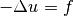

Using ODL with NumPy and SciPy¶
NumPy is the ubiquitous library for array computations in Python, and is used by almost all major numerical packages. It provides optimized Array objects that allow efficient storage of large arrays. It also provides several optimized algorithms for many of the functions used in numerical programming, such as taking the cosine or adding two arrays.
SciPy is a library built on top of NumPy providing more advanced algorithms such as linear solvers, statistics, signal and image processing etc.
Many operations are more naturally performed using NumPy/SciPy than with ODL, and with that in mind ODL has been designed such that interfacing with them is as easy and fast as possible.
Casting vectors to and from arrays¶
ODL vectors are stored in an abstract way, enabling storage on the CPU, GPU, or perhaps on a cluster on the other side of the world. This allows algorithms to be written in a generalized and storage-agnostic manner. Still, it is often convenient to be able to access the data and look at it, perhaps to initialize a vector, or to call an external function.
To cast a NumPy array to an element of an ODL vector space, one can simply call the LinearSpace.element method in an appropriate space:
>>> r3 = odl.rn(3)
>>> arr = np.array([1, 2, 3])
>>> x = r3.element(arr)
If the data type and storage methods allow it, the element simply wraps the underlying array using a view:
>>> float_arr = np.array([1.0, 2.0, 3.0])
>>> x = r3.element(float_arr)
>>> x.data is float_arr
True
Casting ODL vector space elements to NumPy arrays can be done in two ways, either through the member function Tensor.asarray, or using numpy.asarray.
These are both optimized and return a view if possible:
>>> x.asarray()
array([ 1., 2., 3.])
>>> np.asarray(x)
array([ 1., 2., 3.])
These methods work with any ODL object represented by an array. For example, in discretizations, a two-dimensional array can be used:
>>> space = odl.uniform_discr([0, 0], [1, 1], shape=(3, 3))
>>> arr = np.array([[1, 2, 3],
... [4, 5, 6],
... [7, 8, 9]])
>>> x = space.element(arr)
>>> x.asarray()
array([[ 1., 2., 3.],
[ 4., 5., 6.],
[ 7., 8., 9.]])
Using ODL objects with NumPy functions¶
A very convenient feature of ODL is its seamless interaction with NumPy functions. For universal functions or ufuncs, this is supported by several mechanisms as explained below.
Evaluating a NumPy ufunc on an ODL object works as expected:
>>> r3 = odl.rn(3)
>>> x = r3.element([1, 2, 3])
>>> np.negative(x)
rn(3).element([-1., -2., -3.])
It is also possible to use an ODL object as out parameter:
>>> out = r3.element()
>>> result = np.negative(x, out=out) # variant 1
>>> out
rn(3).element([-1., -2., -3.])
>>> result is out
True
>>> out = r3.element()
>>> result = x.ufuncs.negative(out=out) # variant 2
>>> out
rn(3).element([-1., -2., -3.])
>>> result is out
True
Note
Using out of type other than numpy.ndarray in NumPy ufuncs (variant 1 above) only works with NumPy version 1.13 or higher.
Variant 2 also works with older versions, but the interface may be removed in a future version of ODL.
Before NumPy 1.13, the sequence of actions triggered by the call np.negative(x) would be like this:
Cast
xto a NumPy array byx_arr = x.__array__().Run the ufunc on the array,
res_arr = np.negative(x_arr).Re-wrap the result as
res = x.__array_wrap__(res_arr).Return
res.
This method has two major drawbacks, namely (1) users cannot override the ufunc that is being called, and (2) custom objects are not accepted as out parameters.
Therefore, a new __array_ufunc__ mechanism was [introduced in NumPy 1.13](https://docs.scipy.org/doc/numpy/release.html#array-ufunc-added) that removes these limitations.
It is used whenever a NumPy ufunc is called on an object implementing this method, which then takes full control of the ufunc mechanism.
For details, check out the NEP describing the logic, or the interface documentation.
See also NumPy's general documentation on ufuncs
For other functions that are not ufuncs, ODL vector space elements are usually accepted as input, but the output is typically of type numpy.ndarray, i.e., the result will not be not re-wrapped:
>>> np.convolve(x, x, mode='same')
array([ 4., 10., 12.])
In such a case, or if a space element has to be modified in-place using some NumPy function (or any function defined on arrays), we have the writable_array context manager that exposes a NumPy array which gets automatically assigned back to the ODL object:
>>> with odl.util.writable_array(x) as x_arr:
... np.cumsum(x_arr, out=x_arr)
>>> x
rn(3).element([ 1., 3., 6.])
Note
The re-assignment is a no-op if x has a NumPy array as its data container, hence the operation will be as fast as manipulating x directly.
The same syntax also works with other data containers, but in this case, copies to and from a NumPy array are usually necessary.
NumPy functions as Operators¶
To solve the above issue, it is often useful to write an Operator wrapping NumPy functions, thus allowing full access to the ODL ecosystem.
The convolution operation, written as ODL operator, could look like this:
>>> class MyConvolution(odl.Operator):
... """Operator for convolving with a given kernel."""
...
... def __init__(self, kernel):
... """Initialize the convolution."""
... self.kernel = kernel
...
... # Initialize operator base class.
... # This operator maps from the space of vector to the same space and is linear
... super(MyConvolution, self).__init__(
... domain=kernel.space, range=kernel.space, linear=True)
...
... def _call(self, x):
... # The output of an Operator is automatically cast to an ODL object
... return np.convolve(x, self.kernel, mode='same')
This operator can then be called on its domain elements:
>>> kernel = odl.rn(3).element([1, 2, 1])
>>> conv_op = MyConvolution(kernel)
>>> conv_op([1, 2, 3])
rn(3).element([ 4., 8., 8.])
It can be also be used with any of the ODL operator functionalities such as multiplication with scalar, composition, etc:
>>> scaled_op = 2 * conv_op # scale output by 2
>>> scaled_op([1, 2, 3])
rn(3).element([ 8., 16., 16.])
>>> y = odl.rn(3).element([1, 1, 1])
>>> inner_product_op = odl.InnerProductOperator(y)
>>> # Create composition with inner product operator with [1, 1, 1].
>>> # When called on a vector, the result should be the sum of the
>>> # convolved vector.
>>> composed_op = inner_product_op * conv_op
>>> composed_op([1, 2, 3])
20.0
For more information on ODL Operators, how to implement them and their features, see the guide on Operators.
Using ODL with SciPy linear solvers¶
SciPy includes a series of very competent solvers that may be useful in solving some linear problems.
If you have invested some effort into writing an ODL operator, or perhaps wish to use a pre-existing operator, then the function as_scipy_operator creates a Python object that can be used in SciPy's linear solvers.
Here is a simple example of solving Poisson's equation  on the interval ![[0, 1]](../_images/math/8027137b3073a7f5ca4e45ba2d030dcff154eca4.png) :
:
>>> space = odl.uniform_discr(0, 1, 5)
>>> op = -odl.Laplacian(space)
>>> f = space.element(lambda x: (x > 0.4) & (x < 0.6)) # indicator function on [0.4, 0.6]
>>> u, status = scipy.sparse.linalg.cg(odl.as_scipy_operator(op), f)
>>> u
array([ 0.02, 0.04, 0.06, 0.04, 0.02])